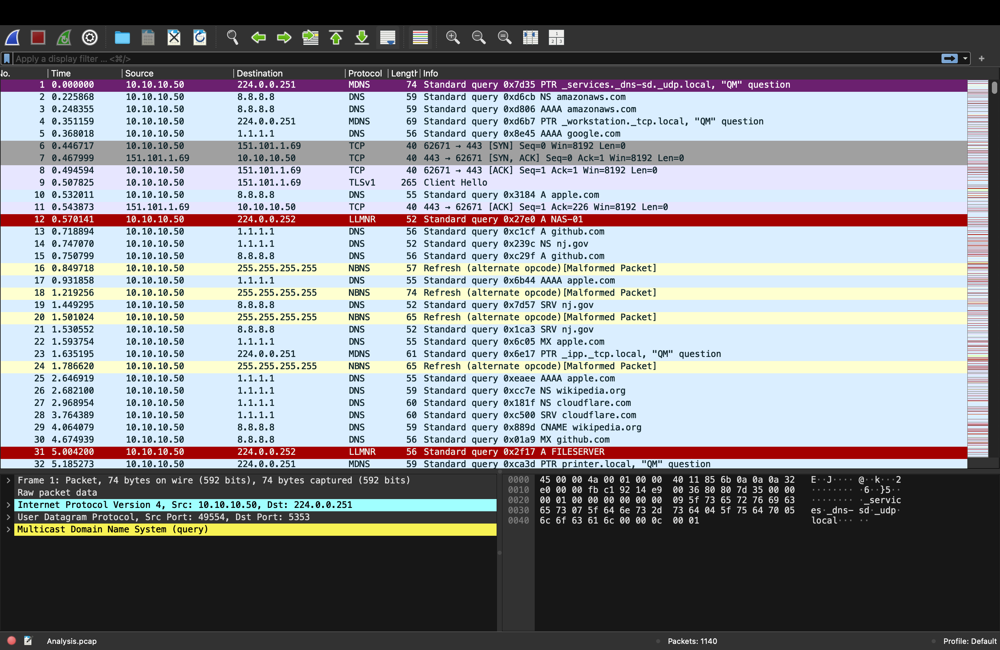

Wireshark CTF Analysis
Using packet captures to trace attacker activity, recover files, and extract flags during a CTF challenge.
📋 Project Overview
Summary
This page outlines a practical workflow for solving a capture-the-flag challenge with Wireshark. The focus is on narrowing a large packet capture into useful traffic, identifying suspicious protocols, rebuilding conversations, and pulling artifacts that may contain credentials, malware samples, or the final flag.
Key Skills Used:
- Protocol filtering to isolate DNS, HTTP, TCP, FTP, and other likely sources of flags.
- Stream following to reconstruct attacker sessions and read transferred data in order.
- File recovery by exporting HTTP objects or rebuilding transferred content from packets.
- IOC hunting to identify unusual hosts, encoded payloads, and suspicious destinations quickly.
🕵️ CTF Scenario
In this example scenario, a provided `.pcap` file contains traffic from a compromised workstation. The objective is to determine how the attacker communicated, what was exfiltrated, and where the hidden flag appears in the capture.
Typical Goal
Find the malicious conversation, recover the transferred content, and extract a flag embedded in either plaintext traffic, an exported object, or a decoded payload.
🔍 Analysis Workflow
1. Baseline the Capture
Review endpoints, packet counts, and protocol hierarchy to identify what traffic types matter first.
2. Filter Suspicious Traffic
Use display filters to isolate unusual DNS lookups, failed logins, or external connections.
3. Rebuild Streams
Follow TCP or HTTP streams to see full requests, responses, commands, and recovered text.
4. Export Artifacts
Save transferred files and inspect them for flags, credentials, or hidden encoded data.
🧰 Why Wireshark Helps in CTFs
Wireshark is useful in CTF environments because it turns raw network captures into searchable evidence. Instead of reading packets one by one, you can sort by protocol, inspect timing, follow conversations, and recover objects directly. That makes it effective for challenges involving phishing, malware callbacks, credential reuse, covert channels, or data exfiltration.
Common Places Flags Appear:
- HTTP requests and responses where the flag is transmitted in plaintext or embedded in a file.
- DNS queries where the attacker hides data in subdomains.
- Exported objects such as images, documents, or scripts transferred over the network.
- Encoded payloads that require base64 or hex decoding after extraction.
📷 Example Capture
This screenshot links to the example Wireshark image used for the challenge walkthrough.

Click the image to open WireSharkExample.png.